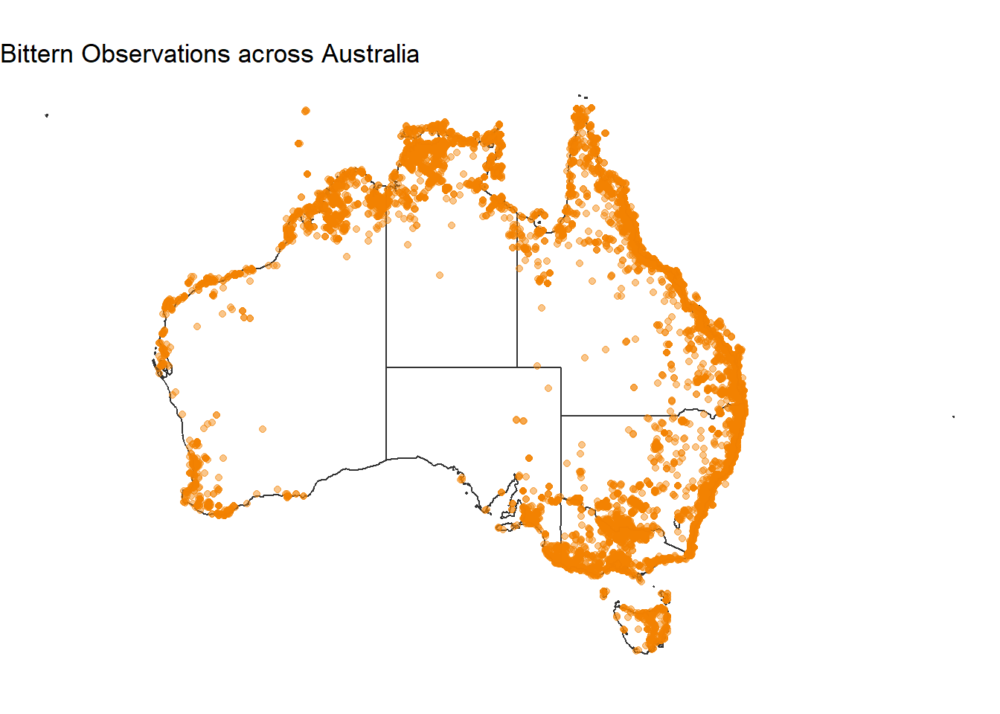

Bitterns in Australia
There are several species of bittern in Australia
| species | author | species_guid | vernacular_name |
|---|---|---|---|
| Butorides striata | (Linnaeus, 1758) | https://biodiversity.org.au/afd/taxa/b3f14aaf-20f9-451e-980d-ad4766f49e5f | Green-backed Bittern |
| Botaurus poiciloptilus | (Wagler, 1827) | https://biodiversity.org.au/afd/taxa/dba78701-cae9-4afb-a41a-6697c52c5e34 | Australasian Bittern |
| Ixobrychus flavicollis | (Latham, 1790) | https://biodiversity.org.au/afd/taxa/ecb2030b-0309-43f2-8fb3-22776db1b98d | Yellow-necked Bittern |
| Ixobrychus dubius | Mathews, 1912 | https://biodiversity.org.au/afd/taxa/20938676-d287-43d7-a887-a15fbb3ff6bb | Minute Bittern |
| Ixobrychus minutus | Linnaeus | NZOR-6-22982 | Little Bittern |
Total observations in Australia:
| count |
|---|
| 56428 |
| species | count |
|---|---|
| Butorides striata | 40061 |
| Ixobrychus flavicollis | 6457 |
| Botaurus poiciloptilus | 6401 |
| Ixobrychus dubius | 3430 |
| Ixobrychus minutus | 66 |
Data Providers:

Tasmania
The ALA only has records of one species of bittern in Tasmania: Botaurus poiciloptilus aka the Australasian Bittern
| species | author | species_guid | vernacular_name |
|---|---|---|---|
| Botaurus poiciloptilus | (Wagler, 1827) | https://biodiversity.org.au/afd/taxa/dba78701-cae9-4afb-a41a-6697c52c5e34 | Australasian Bittern |
Total observations in Tasmania:
| count |
|---|
| 406 |
Data Providers: